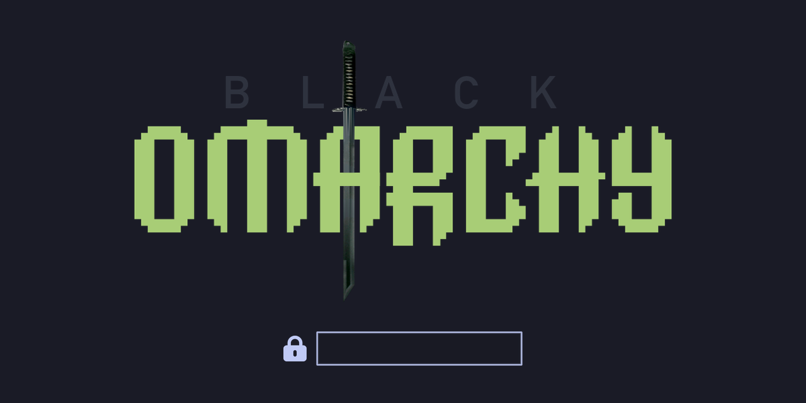

What it adds
- 01 The official BlackArch package repository
- 02 Compatibility-tested security tools
- 03 A small profile and verification CLI
- 04 Omarchy menu, update, and agent integrations
Omarchy, extended carefully
Black omARCHy adds the official BlackArch repository, curated security-tool profiles, and a thin CLI to a supported Omarchy host—without replacing the desktop, update path, or upstream identity.
Experimental v0.1 · Omarchy 4.x · x86_64

additive layer active
omarchy baseline preserved
Official BlackArch repository
Curated profiles
Omarchy-native updates
Cleanly removable
01 / The idea
What it adds
What stays yours
Not a distro. Not Kali. Not a fork. Not a full BlackArch metapackage installer.
02 / Tool profiles
Profiles are curated, compatibility-aware subsets—not a request to install every package in BlackArch.
Professional baseline
Web assessment extras
Discovery and OSINT
Network assessment
Wireless analysis
Reverse engineering
Evidence and analysis
Password and hash tools
03 / Security model
The bootstrap verifies upstream material, records an Omarchy baseline, skips conflicting packages, and checks for unexpected drift when it finishes.
Read the security modelRequire supported, packaged Omarchy on x86_64.
Check the official strap hash and keyring signature.
Install one package at a time and skip replacements.
Compare the Omarchy baseline and fail on surprises.
04 / Daily use
Keep using omarchy update. With BlackArch appended last,
Arch and Omarchy packages retain priority while installed security tools
update in the same supported transaction.
05 / Quick answers
No. It is an independent integration layer installed on a supported Omarchy host.
No. It installs curated profiles. The all profile means every curated profile, not every BlackArch package.
No. The desktop, applications, keybindings, package priority, and update command remain Omarchy's.
Yes. The repository includes an uninstall path that removes the layer and restores its backed-up state.
Experimental and open source
Read the bootstrap, understand the security model, and start with the curated core profile.